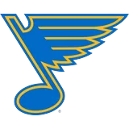
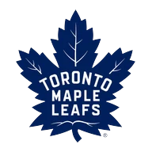
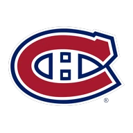
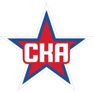
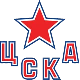
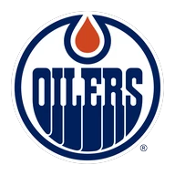
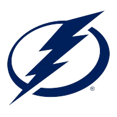

Каждый прогноз опубликован до матча. Время публикации, кэф, итог и номер поста. Ничего не удаляем.
Выборка — 153 прогноза. Это немного: смотрите на дистанции. Футбол — проба с 30.10, считаем отдельно.
| Дата | Лига | Матч | Ставка | Кэф | Опубликовано | Начало | Итог | Пост |
|---|---|---|---|---|---|---|---|---|
| 30.10 | НХЛ |  СТЛ — БОС | ИТБ 2,5 | 1,75 | 14:12 | ✕ | №1229 | |
| 30.10 | КХЛ | САЛ — АКБ | П1 | 1,82 | 07:51 | ✓ | №1226 | |
| 30.10 | КХЛ | АВА — МЕТ | ТБ 4,5 | 1,90 | 07:49 | ✓ | №1225 | |
| 29.10 | НХЛ |  ТОР — МТЛ | П1 | 1,66 | 14:05 | ↺ | №1221 | |
| 29.10 | КХЛ | ЛОК — ТОР | П1 | 1,95 | 07:44 | ✕ | №1218 | |
| 29.10 | КХЛ |  СКА — ЦСКА | П1 | 1,70 | 07:43 | ✓ | №1217 | |
| 28.10 | НХЛ | КОЛ — ЭДМ  | ТБ 5,5 | 1,85 | 14:02 | ✓ | №1213 | |
| 28.10 | КХЛ | ТРК — СИБ | ИТМ 3,5 | 1,72 | 07:40 | ✓ | №1210 | |
| 28.10 | КХЛ | ДИН — СПА | П1 | 2,05 | 07:39 | ✕ | №1209 | |
| 27.10 | НХЛ | ФЛА — ТБЛ  | П1 | 1,78 | 14:10 | ✓ | №1204 | |
| 27.10 | КХЛ | АДМ — АМУ | ТБ 4,5 | 1,88 | 07:41 | ✓ | №1201 | |
| 27.10 | КХЛ | СЕВ — ЛАД | П1 | 1,92 | 07:38 | ✓ | №1200 |
Когда модель говорила 55–60 %, зашло столько же, сколько обещали?
Покажем, когда наберётся выборка для каждой корзины.
Бостон создал моменты, как и ждала модель, но вратарь хозяев отразил 94 % бросков.
Не учли, что у хозяев играл запасной вратарь: данные обновились уже после поста.